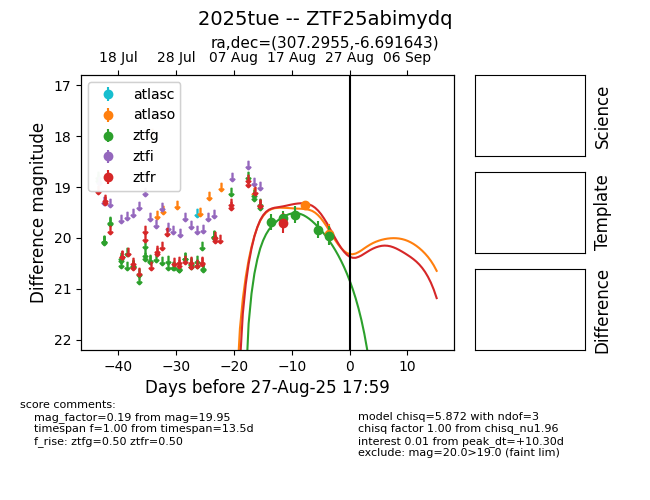

Target 2025tue at 2025-08-26 10:53, see:
FINK: fink-portal.org/ZTF25abimydq
Lasair: lasair-ztf.lsst.ac.uk/objects/ZTF25abimydq
ALeRCE: alerce.online/object/ZTF25abimydq
TNS: wis-tns.org/object/2025tue
YSE: ziggy.ucolick.org/yse/transient_detail/2025tue
alt names
ZTF25abimydq (ztf,fink)
2025tue (tns,yse)
coordinates:
equatorial (ra, dec) = (307.2955,-6.69164)
galactic (l, b) = (38.2166,-24.75845)
photometry
last atlaso=19.92, ztfg=19.95, ztfr=19.71
2 atlaso, 5 ztfg, 1 ztfr detections
